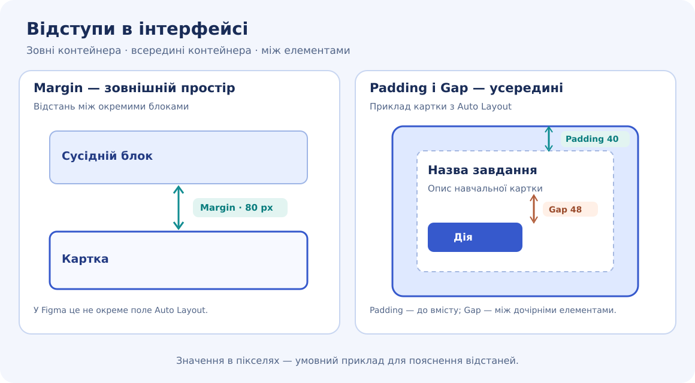
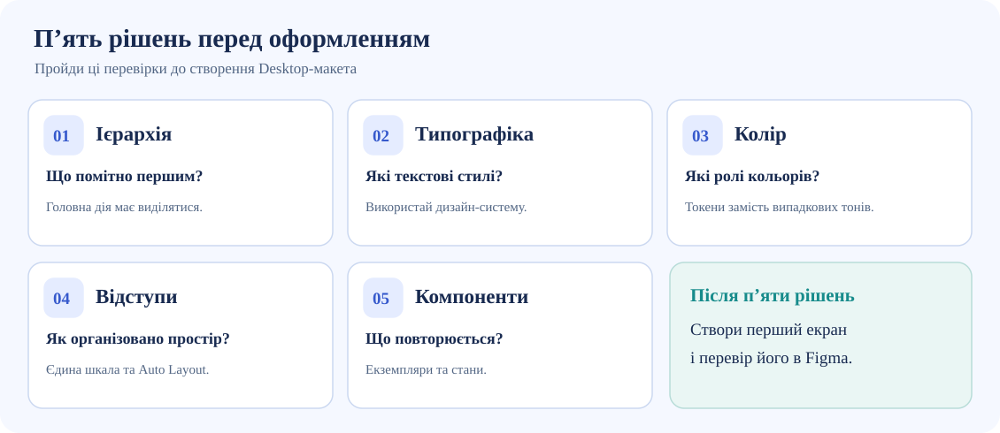
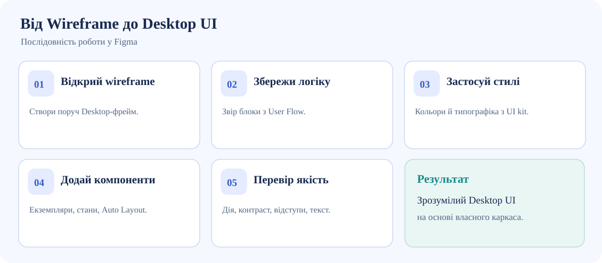

Колір і контраст
Основний колір позначає важливі дії; нейтральні кольори підтримують читабельність. Колір не повинен бути єдиним способом передати помилку.
10 КЛАС · 90 ХВ · ПРОДОВЖЕННЯ ПРОЄКТУ
Перетвори свої wireframes на справжній інтерфейс у Figma. Застосуй власну дизайн-систему, перевір логіку та збережи прогрес для роботи вдома.
ЛИШЕ ДЛЯ ВЧИТЕЛЯ
Мета: застосувати власну дизайн-систему до Desktop-макетів усіх основних сторінок MVP. На занятті достатньо завершити одну ключову сторінку і почати інші; завершення вдома допускається.
Перевірка: учень демонструє Figma-файл, узгодженість із Sitemap і User Flow, компоненти та обґрунтовані рішення. Позначки чеклістів — самооцінка, а не автоматичне підтвердження якості.
Важливо: сайт не має доступу до вмісту Figma за URL, не перевіряє макети автоматично і не надсилає учнівські дані вчителю.
10 ХВ · КОНТЕКСТ
Твій UI починається не з порожнього полотна, а з архітектури, створеної на Парі 01.
Обери JSON, який ти зберіг наприкінці попереднього заняття. Перевіримо формат і перенесемо назву проєкту, Figma, Sitemap, User Flow, Wireframes та список сторінок.
JSON ще не імпортовано. Можна заповнити контекст вручну.
15 ХВ · ТЕОРІЯ + ПРАКТИКА
Wireframe відповідає на запитання «що і де?». UI-дизайн додає візуальну ієрархію, зрозумілі стани та послідовну дизайн-систему.
Wireframe — схема розташування змісту й дій. UI-макет зберігає цю логіку, але додає візуальні правила: ієрархію, кольори, типографіку, відступи та компоненти. Кольорові прямокутники самі по собі ще не є готовим UI.
Основний колір позначає важливі дії; нейтральні кольори підтримують читабельність. Колір не повинен бути єдиним способом передати помилку.
Заголовок показує тему екрана, підзаголовок уточнює, основний текст пояснює, підпис додає деталі. Розмір і насиченість формують ієрархію.
Padding — простір усередині картки; Gap — відстань між дочірніми елементами. Auto Layout допомагає зберігати ці правила при зміні тексту.
Кнопка, поле введення та картка мають повторно використовуватися як екземпляри компонентів. Зміни основного компонента можуть поширюватися на екземпляри.
Один скриншот готового екрана не показує всі стани. Нижче — окрема схема для кнопки. Hover — наведення, Focus — фокус клавіатури, Disabled — недоступна дія, Error — помилка, яку потрібно пояснити текстом.
Це демонстраційні стани. У власному UI застосуй компоненти та Variants своєї дизайн-системи.

У Figma Design параметри Padding і Gap налаштовують у Auto Layout. Зовнішній відступ (Margin) — поняття компонування: його можна забезпечити, наприклад, через Padding батьківського контейнера або розміщення сусідніх елементів. Не шукай окреме поле Margin в Auto Layout.
Використовуй спільні компоненти для навігації, кнопок і полів. Звіряй кожну сторінку з Sitemap: користувач має розуміти, де він перебуває та як повернутися до попередньої дії.
Порівняй готовий макет із User Flow. Перевір початок сценарію, основну дію, результат і шлях у випадку помилки. Якщо потрібної кнопки чи повідомлення немає — додай його до макета й поясни рішення.

Mission 02 · Desktop UI. Не видаляй попередні Sitemap, User Flow та Wireframes. Desktop-фрейм 1440 px можна використати як навчальний приклад, але це не універсальна вимога.25 ХВ · ПРАКТИКА
Візьми каркас ключової сторінки власного MVP і перетвори його на оформлений інтерфейс. Не копіюй умовний приклад — працюй зі своїм продуктом.

Desktop / Home).figma.com/design/FILE_ID/Projectfigma.com/design/FILE_ID/Project?node-id=125-48Параметр node-id указує на вузол, але він може бути не фреймом. Перевір це відкриттям посилання. Не потрібно вручну вигадувати node-id.
25 ХВ · СТОРІНКИ MVP
Список нижче формується з pageList Пари 01. Якщо він порожній, додай сторінки вручну. Можна змінювати назви та статуси. Для кожної сторінки вставляй покликання на відповідний фрейм, а не одне загальне покликання на весь Figma-файл. Інструкція є в етапі 03.
Поки немає сторінок. Імпортуй JSON Пари 01 або додай сторінку.
Статуси показують самооцінку. Посилання на Figma перевіряється лише за форматом адреси — не за вмістом макета.
10 ХВ · КРИТИЧНИЙ АУДИТ
Для якісного аудиту потрібні конкретні матеріали. ШІ не бачить внутрішню структуру Figma за самим покликанням: надай зображення й контекст, а кожну рекомендацію перевір самостійно.
Перед надсиланням: додай назву продукту, цільову аудиторію, основну дію користувача та запитання до аудиту. Для інших ключових сторінок повтори перевірку окремо.
Ти — UI/UX-рецензент і наставник учня 10 класу. Я створюю Desktop UI власного цифрового продукту у Figma. Назва: [назва]. Цільова аудиторія: [аудиторія]. Основна дія користувача: [дія]. Я додаю: (1) повний скриншот ключового Desktop-фрейму; (2) збільшений фрагмент із кнопками, полями, картками й текстом; (3) скриншот станів компонентів, якщо він є. Перевір видиму візуальну ієрархію, читабельність, відступи, послідовність кольорів, зрозумілість дій та можливі проблеми доступності. Для кожного зауваження напиши: де саме проблему видно, чому вона важлива, як її виправити та що потрібно перевірити вручну. Відокремлюй спостереження від припущень. Не стверджуй, що перевірив клікабельність, внутрішню структуру Figma, точні значення контрасту чи приховані стани, якщо даних для цього немає.
5 ХВ · ЗБЕРЕЖЕННЯ
ДОКАЗИ Й ОБҐРУНТУВАННЯ
САМООЦІНЮВАННЯ
Кожен критерій оцінюється від 0 до 3 балів. Остаточну оцінку виставляє вчитель після перегляду Figma.
Самооцінка: / 12
ЕКСПОРТ ТА ВІДНОВЛЕННЯ
TXT — звіт для Moodle. JSON — резервна копія, потрібна для продовження на іншому пристрої та Парі 03. Figma-макети залишаються у Figma.
Автозбереження діє лише в цьому браузері на цьому пристрої. Перед роботою вдома експортуй JSON; не замінюй ним вихідний JSON Пари 01.